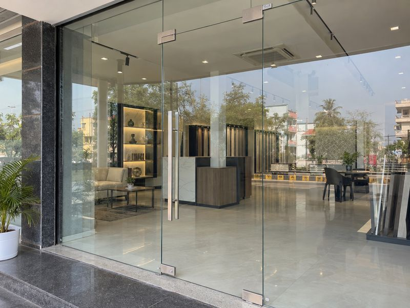
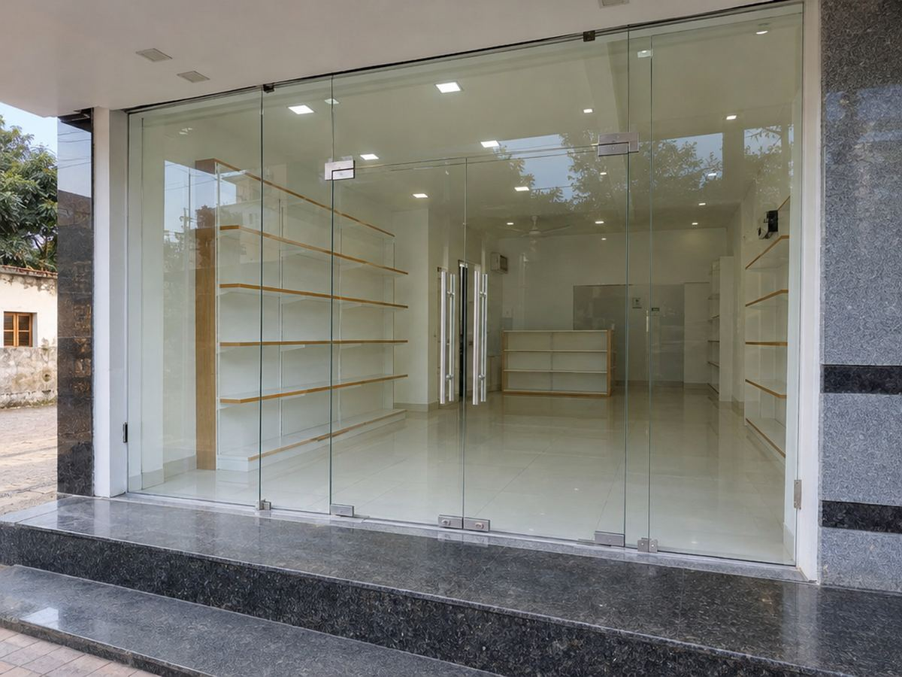
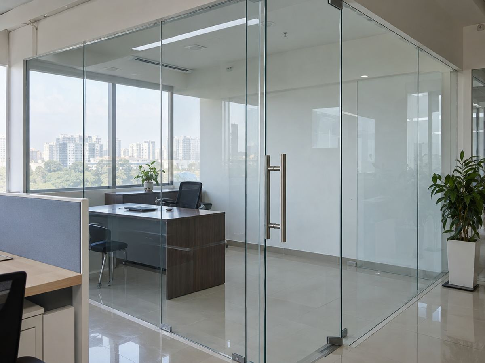
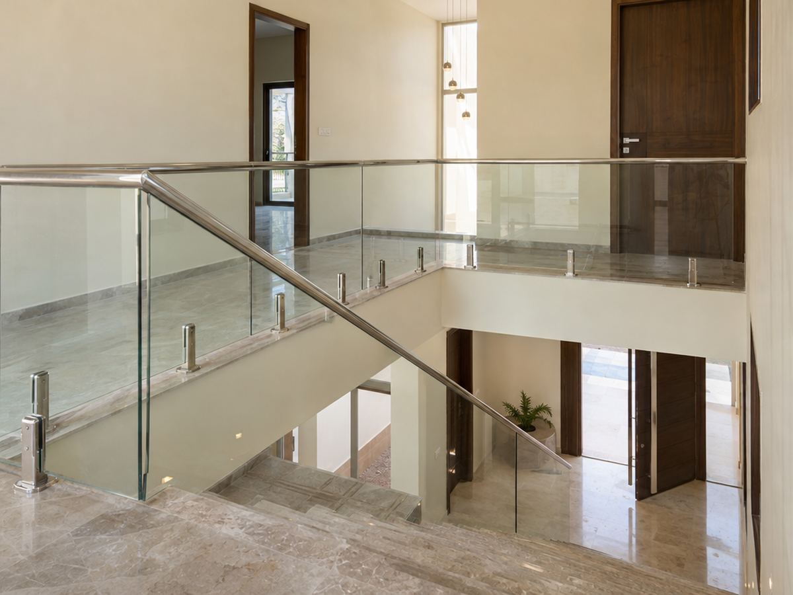

Shop Fronts · Partitions · Doors · Railings
A clear, open look for shops, offices and homes
Toughened glass is heat-treated, so it is much stronger than normal glass. If it ever breaks, it breaks into small blunt pieces instead of sharp sheets. That makes it the right choice for doors, shop fronts, partitions and railings.
We do glass shop fronts, frameless glass doors, office partitions and glass railings — measured on site, ordered to size and fitted with proper fittings. We work in Kotputli and nearby.
Shop ka front ho, office cabin ho ya seedhi ki railing — glass ka poora kaam ek jagah.

Where it’s used
- Shop fronts
- Showrooms
- Office cabins
- Glass doors
- Staircase & balcony railings
- Homes & kothi
Why toughened glass टफ़न ग्लास के फ़ायदे
- 01Much strongerTakes knocks and pressure far better than normal glass of the same thickness.
- 02Safer if brokenBreaks into small blunt pieces, not long sharp pieces.
- 03Open, bright lookLets light through and shows off your shop or space.
- 04Easy to cleanA wipe keeps it shining; no paint, no rust.
- 05Modern fittingsPatch fittings, handles, spigots and channels for a neat finish.
- 06Goes with everythingPairs well with ACP, aluminium, SS railings and shutters.
What we do
One team from first visit to final fitting.
- 1 · Site measurementWe measure the opening or area carefully — toughened glass can’t be cut later.
- 2 · Design & fittingsWe help you choose thickness, clear or frosted glass, and fittings.
- 3 · Glass to sizeGlass is ordered to exact size with holes and cut-outs done before toughening.
- 4 · FittingFitted with proper fittings, sealing and a clean finish.
- Glass + SS railingsGlass railings with stainless steel posts, spigots and handrail.
- Glass + ACP frontsGlass shop fronts combined with ACP elevation and shutter.
Toughened glass ideas
Sample designs to show what this work can look like. Ask us on WhatsApp for photos of our own completed work.



Why MD Industries
- Measured properlyCareful site measurement, because toughened glass is made to size.
- Right fittingsGood-quality fittings so doors and panels sit right.
- Glass + metal workFrames, railings and ACP done by the same team.
- One callGlass, aluminium, SS, ACP and shutter from one place.
Glass ka kaam karwana hai?
Call or WhatsApp us with a photo and rough size — we’ll suggest the glass and come to measure.
Visit us संपर्क करें
- AddressBehind Hotel Rawat Regency, Bansur Road, Kotputli, Rajasthan 303108
- Phone / WhatsApp+91 91667 82730
- Emailimrankhn316@gmail.com